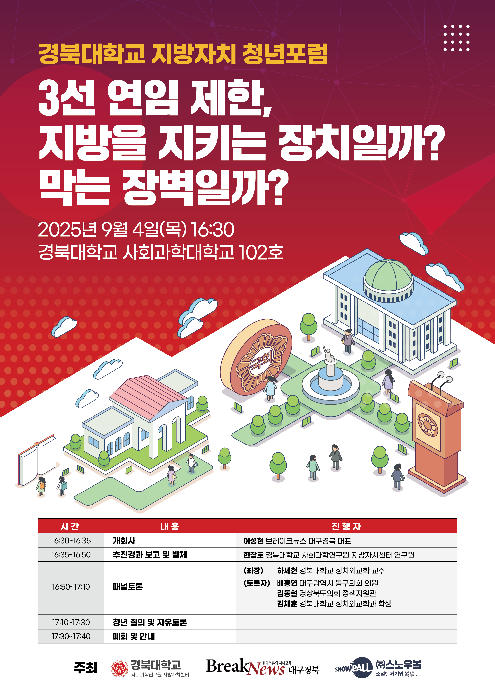

활동 개요
의정활동연구회는 경북대학교 정치외교학과의 대표 학술 연구회로서, 국내 정치 현안과 입법 과정에 대한 분석을 중심으로 연구를 이어가고 있습니다. '지방자치 청년포럼', 'STEP-UP 특강' 등 교내외 프로그램을 주관하며, 학생들이 직접 정책을 제안하고 비판적 시각을 기르는 활동을 펼치고 있습니다.
- 지방자치 및 청년정책 관련 공개 포럼 개최
- 대학생 의회 모의토론 프로그램 진행
- 정책 제안서 및 연구 논문 작성
